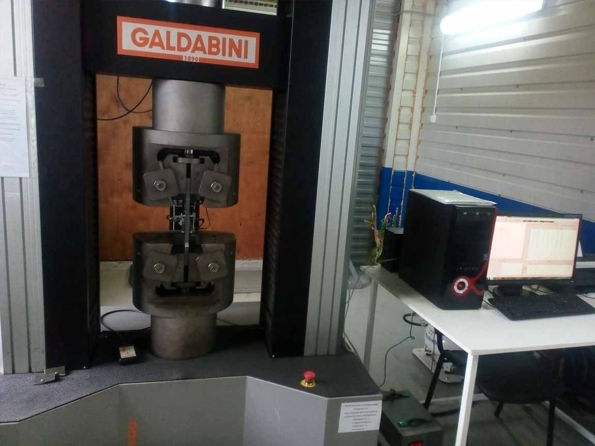
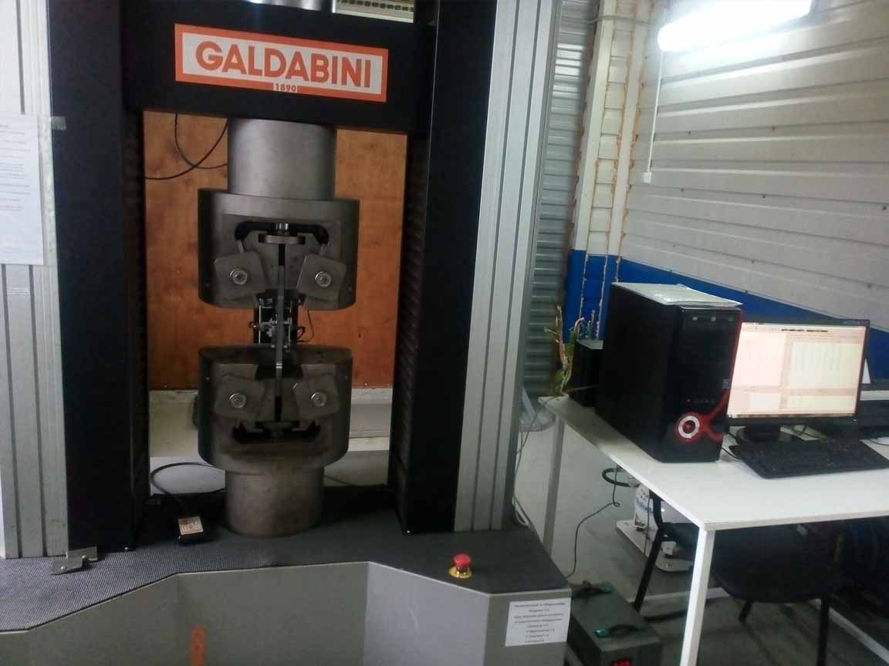

Знание точного химического металлов и сплавов - необходимое условие для эффективного развития и функционирования металлургической, горнодобывающей, обрабатывающей, машиностроительной, нефтехимической, ферросплавной промышленностей, а также для проведения научно-исследовательских работ.
Анализ химического состава вещества решает ряд важнейших задач, стоящих перед лабораториями предприятий и исследовательских центров, таких как: входной контроль сырья и материалов, контроль в процессе производства, контроль качества и сертификационный анализ продукции, разработка новых технологических материалов.
Химический анализ металлов представляет собой комплекс опытов для выявления слабых и сильных сторон материала, его характеристик и функций. Вся эта многофункциональная работа требует специального оборудования, которое обеспечивало бы надёжную проверку вещества, что необходимо для изготовления любой высококачественной продукции.
Существует множество способов изучения сплавов, однако, несмотря на такую конкуренцию в науке, химический анализ остаётся ведущим в этой области, так как даёт наиболее достоверную информацию. Новейшая аппаратура и эмиссионный метод, который мы применяем, позволяет быстро и чётко сформулировать точную картину, определить вещества и примеси, входящие в состав, провести исследование как цветного, так и чёрного металлов.
С нашим оборудованием вы сможете проводить:
- Оперативное определение марки металла и сплава.
- Выявление всех элементов и веществ, которые содержатся в материале, в том числе и примесей.
- Установление структуры сплава.
- Степень пригодности и соответствие заявленным нормам.
- Определение точного количества и веса составных частей.
У нас есть всё для проведения качественного химического анализа
Анализ и обследование металлов требует широкого спектра возможностей технического оборудования, поэтому мы представляем вам современную технику собственного изготовления, которая гарантировано предоставит верный и безошибочных результат исследований. Самый идеальный вариант для анализа металла является тот, в котором основу возбуждения спектра представляет низковольтный ряд. За счёт незначительного вольтажа появляется более чёткая достоверность процентного соотношения примесей и чистого металла. Каждый предлагаемый нами спектрограф предназначен для такой непростой и интенсивной эксплуатации, способен выдержать любые нагрузки и прослужить длительный срок. Мы можем показать поднять производительность на небывалую высоту.
Не менее важно правильно и аккуратно провести подготовительный процесс – для этого у нас есть кокили и станки пробообработки. Они позволяют довести пробу до параметров, рекомендованных соответствующим ГОСТом.
Качество изделий во многом определяется механическими свойствами материалов, из которых они изготавливаются. Основными из них являются удельный вес, плотность, вязкость, твердость, упругость, прочность, жесткость и т.п.
Статические испытания проводятся при воздействии на образец с определенной скоростью постоянно действующей нагрузки. Скорость деформации составляет от 10-4 до 10-1 с-1. Статические испытания на растяжение относятся к наиболее распространенным. Свойства, определяемые при этих испытаниях, приведены в многочисленных стандартах по техническим условиям на материалы. К статическим относятся испытания на растяжение, сжатие, изгиб, кручение.
Динамческие испытания характеризуются приложением к образцу ударной нагрузки и значительной скоростью деформации. Длительность испытания не превышает сотен долей секунды. Скорость деформации составляет около 102 с-1. Динамические испытания чаще всего проводят по схеме ударного изгиба образцов с надрезом.
Циклические испытания характеризуются многократными изменениями нагрузки по величине и по направлению. Примером испытаний являются испытания на усталость, они длительны и по их результату определяют число циклов до разрушения при разных значениях напряжения. В конечном итоге находят предельные напряжения, который образец выдерживает без разрушения в течение определенного числа циклов нагружения.
Испытания на твердость.
Простейшим механическим свойством является твердость. Методы определения твердости в зависимости от скорости приложения нагрузки делятся на статические и динамические, а по способу ее приложения - на методы вдавливания и царапания. Методы определения твердости по Бринеллю, Роквеллу, Виккерсу относятся к статическим методам испытания.
Твердость - это способность материала сопротивляться вдавливанию в него более твердого тела (индентора) под действием внешних сил.
При испытании на твердость в поверхность материалов вдавливают пирамиду, конус или шарик (индентор), в связи с чем различают методы испытаний, соответственно, по Виккерсу, Роквеллу и Бринеллю. Кроме того, существуют менее распространенные методы испытания твердости: метод упругого отскока (по Шору), метод сравнительной твердости (Польди) и некоторые другие.
При испытании материалов на твердость не изготавливают стандартных специальных образцов, однако к размерам и поверхности образцов и изделий предъявляются определенные требования.
Твердость по Виккерсу (ГОСТ 2999-75) устанавливают путем вдавливания в металл индентора - алмазной пирамиды с углом при вершине 136° под действием постоянной нагрузки Р: 1; 2; 2,5; 3; 5; 10; 20; 30; 50 или 100 кгс и выдержки под нагрузкой в течение 10-15 с. Для определения твердости черных металлов и сплавов используют нагрузки от 5 до 100 кгс, медных сплавов - от 2,5 до 50 кгс, алюминиевых сплавов - от 1 до 100 кгс.
Испытание на растяжение материалов проводят в соответствии с ГОСТ 1497-84 «Методы испытаний на растяжение». Стандарт устанавливает методы статических испытаний на растяжение черных и цветных металлов для определения при температуре 20 °С пределов пропорциональности, упругости, текучести, временного сопротивления разрыву, относительного удлинения и относительного сужения, модуля упругости.
Для испытаний применяют плоские и цилиндрические образцы, вырезанные из детали или специально изготовленные. Размеры образцов регламентированы указанным стандартом, они подчиняются геометрическому подобию и могут быть короткими и длинными. Для цилиндрического образца берется соотношение начальной рабочей длины l0 и исходного диаметра d0 : l0= 5d0 - короткий образец, l0= 10d0 - длинный образец. Для плоского образцаберется соотношение рабочей длины l0 и площади поперечного сечения F0:
l0= 5,65√F0 - короткий образец, l0= 11,3√F0 - длинный образец. Цилиндрические образцы изготавливаются диаметром 3 мм и более. Образцы состоят из рабочей части длиной l0 и головок, форма и размер которых соответствуют захватам машины.
Пластичность, т.е. способность деформироваться без разрушения, характеризуется изменениями размеров образца. При испытании на разрыв определяют следующие характеристики пластичности:
относительное удлинение
δ=(lk-l0)/ l0*100%
относительное сужение
Ψ=(F0к-F)/ F0*100%
где lк, Fк — соответственно, длина рабочей части и площадь поперечного сечения образца после разрыва.
Рассчитанные характеристики механических свойств после испытания на растяжение заносятся в протокол.
Испытания на ударный изгиб.
Ударная вязкость характеризует удельную работу, затрачиваемую на разрушение при ударе образца с надрезом. Ударная вязкость испытывается на маятниковом копре с постоянным запасом работы маятника по ГОСТ 9454-78 «Металлы. Метод испытания на ударный изгиб при пониженной, комнатной и повышенной температурах». Стандарт распространяется на черные и цветные металлы и сплавы и устанавливает метод испытания при температурах от -100 до +1000 °С. Метод основан на разрушении ударом маятникового копра образца с концентратором напряжений. В результате испытания определяют полную работу, затраченную при ударе К, или ударную вязкость КС.
Используют образцы прямоугольной формы с концентратором типа U, V, Т (усталостная трещина). Наиболее распространенными образцами являются образцы размерами 55x10x10 мм с U-концентратом 2x2 мм (рис. 6).
На разрушение ударом образца затрачивается только часть энергии маятника, в связи с чем маятник после разрушения образца продолжает двигаться, отклоняясь на определенный угол. Чем больше величина работы затрачиваемой на разрушение образца, тем на меньший угол он отклоняется от вертикали после разрушения. По величине этого угла и определяют работу удара К или работу, затраченную на разрушение образца. Работу разрушения К относят к площади поперечного сечения образца Soв месте излома и тем самым находят КС - ударную вязкость.
Оптические и физические испытания.
В ходе испытаний металл не только подвергают разного рода воздействиям, но и тщательным образом исследуют под микроскопом. Такие исследования позволяют оценить качество металла, его пригодность, структурные характеристики и прочее.
Кроме того металлы подвергаются радиографическому контролю. Эти исследования осуществляются с помощью гамма-излучения и жесткого рентгеновского излучения. Такой контроль позволяет определить имеющиеся дефекты в металле. Часто радиографическому исследованию подвергаются сварные швы.
Существует также ряд других методов контроля, которым подвергается металл. Среди них:
Магнитно-порошковый – применяется только для никеля, железа и кобальта, а также их сплавов. Этим методом определяются дефекты некоторых видов стали.
Ультразвуковой – также позволяет выявлять дефекты только с помощью импульса ультразвука.
Специальные методы – это и прослушивание со стетоскопом, и испытания на циклическую вязкость и пр.
Все эти испытания, в том числе контрольные, очень важны: они помогают определить какие металлы подходят для разных конструкций, каким обработкам можно подвергать материал, какие режимы сварки использовать и прочее.

 
